Reden kann jeder.
WERK 1: DIE PLATTFORM
Die Tour ansehen
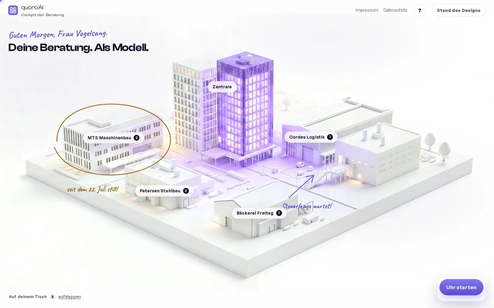
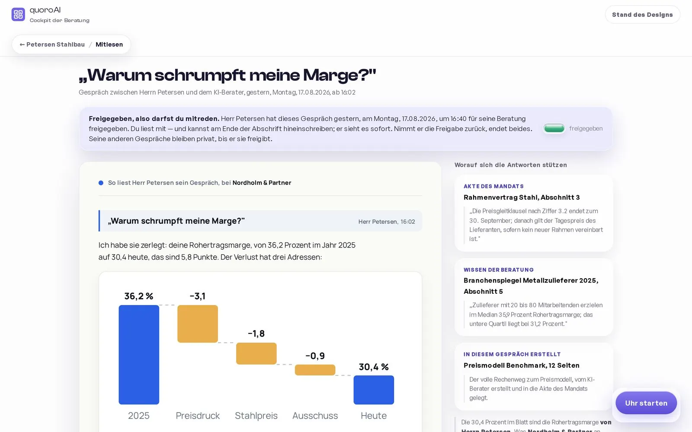
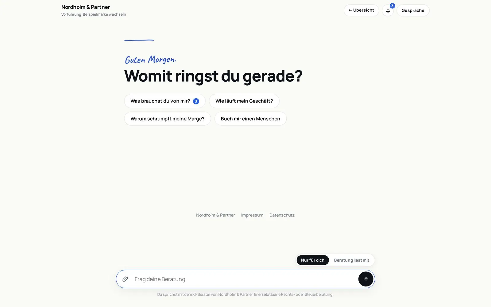
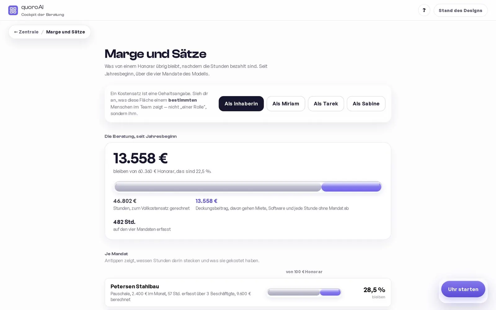
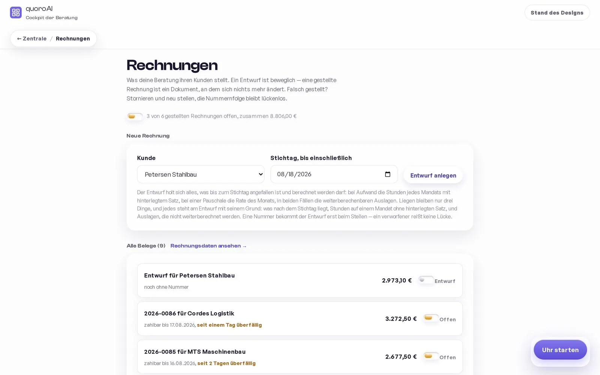
Die Plattform für Beratungen.
Ein Berater unter fremder Marke, samt Mandaten, Zeiten und tagegenauer Abrechnung. Daten in der EU.
WERK 2: DIESE WEBSITE
Noch einmal erleben
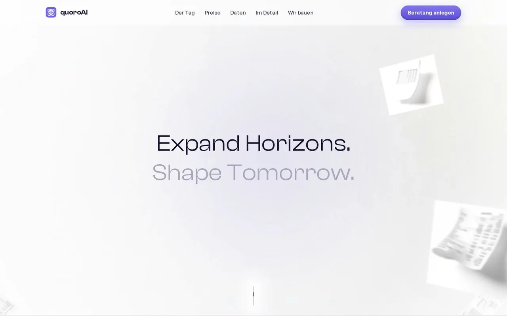
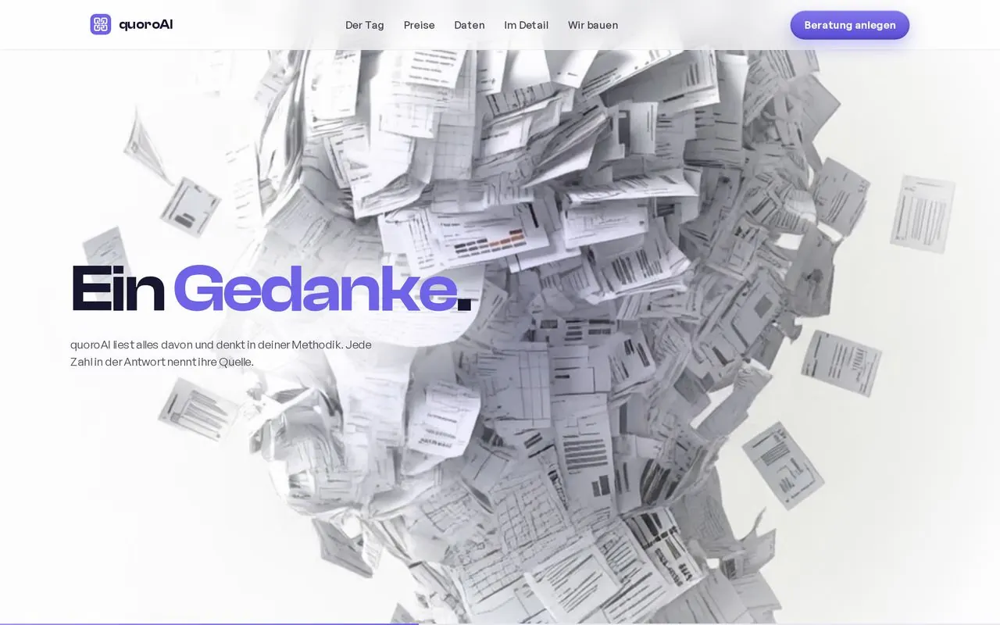
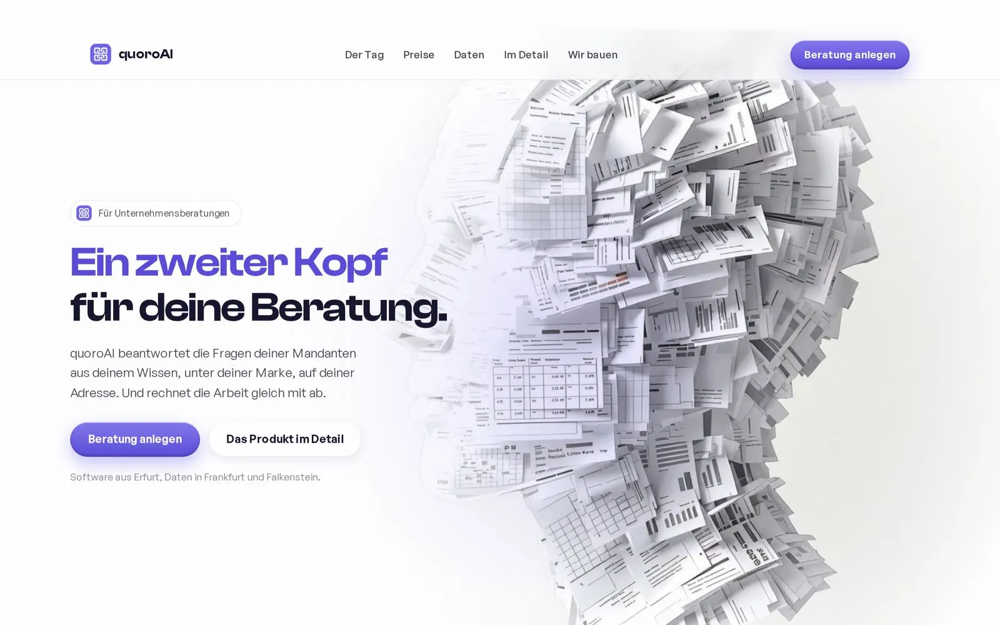
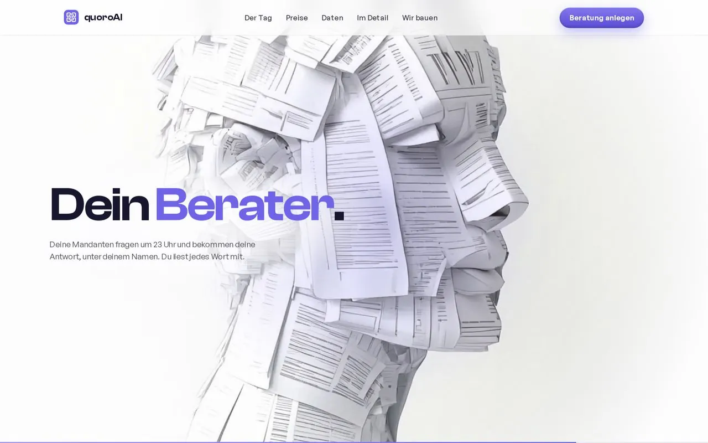
Die Seite, von der du kommst.
Der Kopf aus tausend Belegen, die Drehung, der Tag bis 23:04. Jede Bewegung aus der eigenen Werkstatt.
WERK 3: DIE BILDWERKSTATT
Bildwelt anfragen
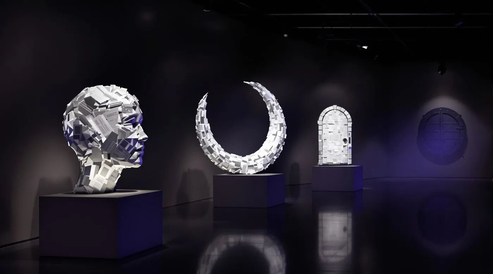
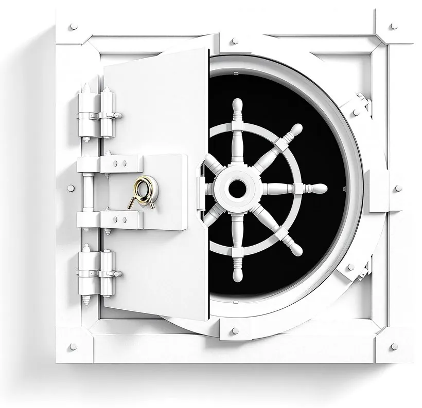
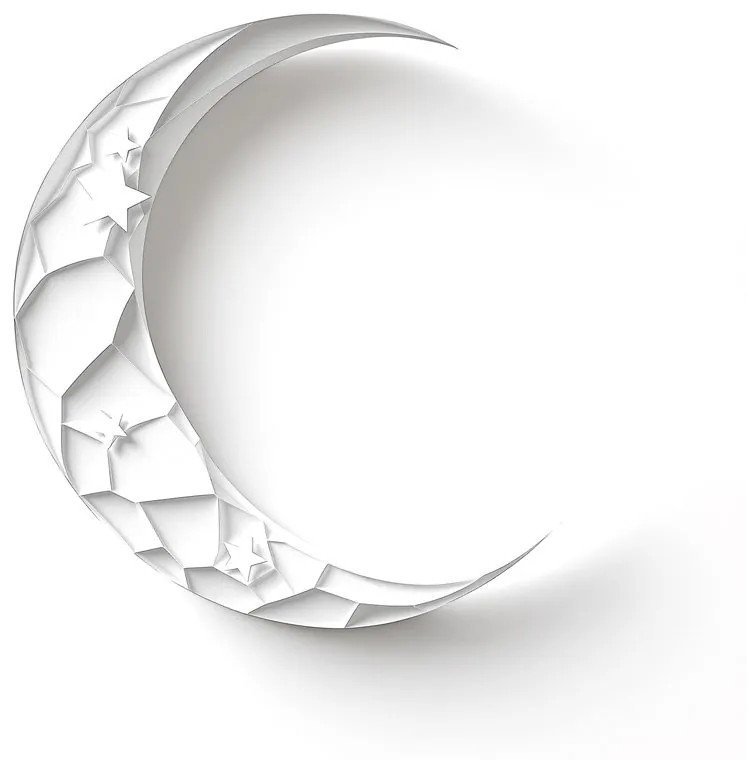
Die Bildwerkstatt dahinter.
Motive und Filme in Stunden statt Wochen. Dieselbe Werkstatt baut die Bildwelt deiner Marke.
Dein Projekt könnte das nächste Werk sein.
Erzähl uns, was dich aufhält.
Zwei Sätze reichen uns.
Schreib, was dich aufhält. Du bekommst keine Broschüre zurück, sondern eine Einschätzung und einen Vorschlag für den ersten Wurf.
Dein Projekt könnte das nächste Werk sein.
Zwei Sätze reichen uns. Du bekommst keine Broschüre zurück, sondern eine Einschätzung und einen Vorschlag für den ersten Wurf.